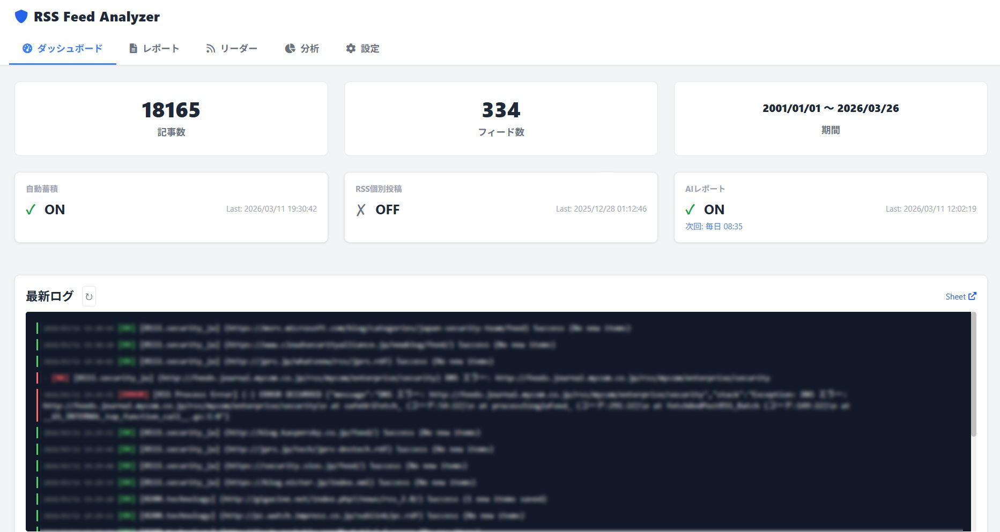
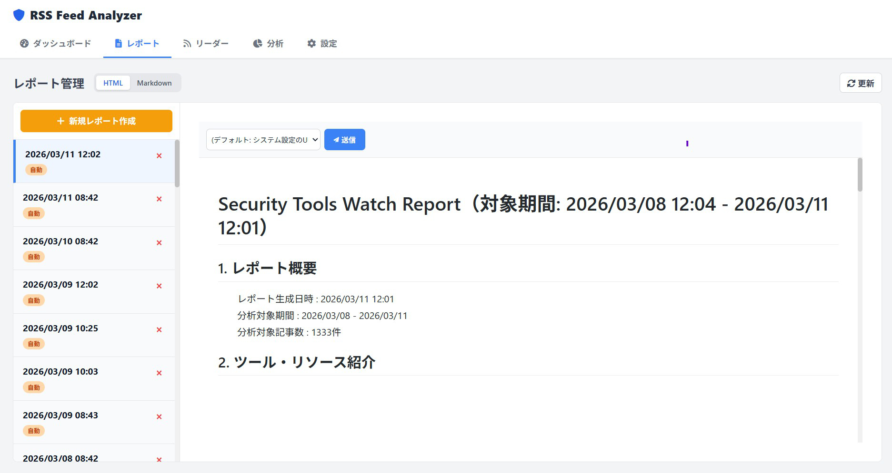
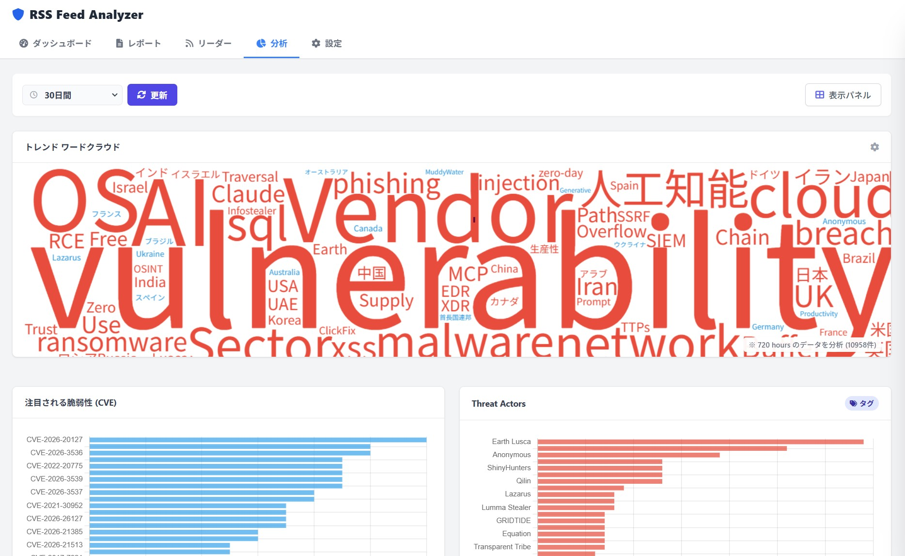
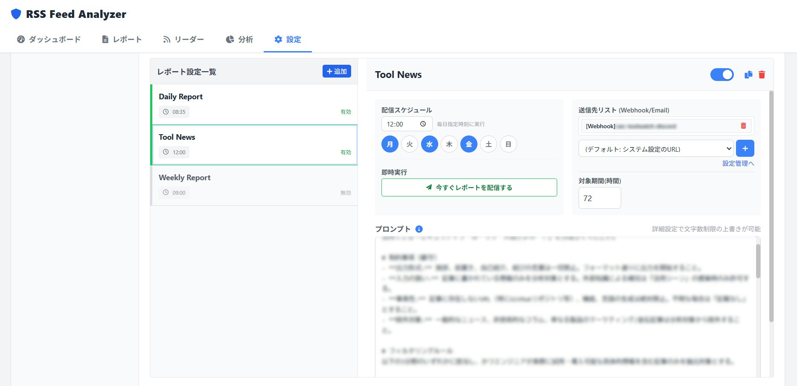

AI搭載型RSSフィードアナライザー。Gemini APIがあなたの代わりに情報を分析。
重要なニュースだけを抽出し、TeamsやSlackへスケジュール配信します。
登録したRSSフィードをGASのタイマートリガーで巡回し、新着記事だけをGoogleスプレッドシートに蓄積します。大容量フィードは自動的に分割処理します。
蓄積した記事群をプロンプトに乗せてGemini APIに送り、要約・分析レポートを生成します。プロンプトは管理画面から自由に編集できます。
蓄積した記事データからAIでタグの候補を抽出し、タグとして付与します。情報の分類を素早く行うことができます。
日時とプロンプトを設定した配信ジョブを複数定義し、Teams・Slack・Discord・メールへ自動配信します。送信先は複数設定でき、ジョブごとに変えられます。
蓄積した記事から抽出したタグをワードクラウドやランキングで表示する分析タブを内蔵しています。タグのグループごとに、タグの出現頻度を指定期間で集計できます。
日々の巡回ワークフローを自動化し、重要なニュースのチェックに集中できる環境を整えます。
Before: 始業後、大量のサイトを一つずつ巡回して新着がないか確認する。
After: あなたが活動を始める前に、Geminiが全サイトをスキャン。今日チェックすべき数本の要約が、すでに手元に届いています。
Before: 海外ニュースや長文の記事を、時間をかけて読み解く必要がある。
After: どんな長文もGeminiが要点を簡潔にまとめます。詳細を読むべきか、スキップすべきか、一目で判断できるようになります。
Before: 複数のソースに散らばった情報を追いきれず、重要な更新を見逃す懸念がある。
After: 24時間体制でAIが巡回。特定のキーワードやトピックに関連する重要な変化だけを、確実に見つけ出します。
Before: URLだけをシェアしても、意図が伝わらずに流されてしまう。
After: AIが生成した要約や「なぜ重要か」という解説を添えて共有。コンテキストを含めた情報共有で、チームの反応が早まります。
専門領域に合わせて、AIが最適なインテリジェンスを提供します。
公的機関やベンダーが発信する緊急速報から、自社に関連する脆弱性をAIが自動選別。「全件チェック」の疲弊から解放されます。
ニュースの端々に隠れた「原材料高騰」や「物流遅延」のリスクをAIが検知。現場へのアラートを最速化します。
世界中の金融ニュースや公示文から、市場の温度感をAIがスコアリング。読解時間を圧縮し、朝礼の質を向上させます。
膨大な抄録から、テーマに「最も近い1本」をレコメンド。調査時間を大幅に短縮し、本来の解析業務に集中できます。
フィードの追加・削除、通知先の設定、レポートのプレビューや手動実行など、すべてWeb UIから行えます。

管理ダッシュボード

AIレポート作成・管理画面

記事分析ビュー

AIレポート配信設定
Google Apps Scriptで動作します。専用サーバーは不要です。
GASのタイマートリガーが定期的に実行され、登録済みRSSフィードを巡回します。未取得の記事のみをスプレッドシートに書き込みます。
設定した時刻になると、対象期間内の記事をGemini APIに送信します。返ってきた分析テキストをそのままレポートとして使用します。
生成したレポートを、設定した送信先（Teams / Slack / Discord / メール）に送ります。送信先とスケジュールは複数定義できます。